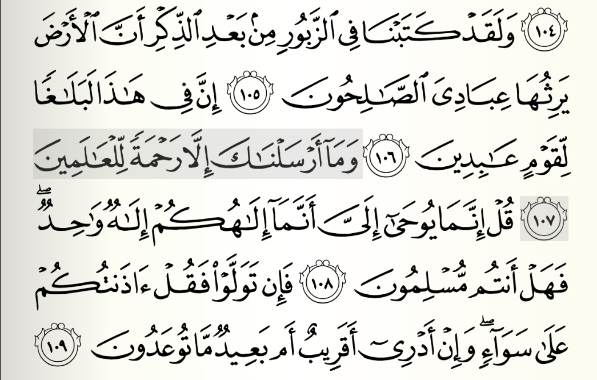

Kogin Sirri
Home
Web
About Us

One of the most profound and widely quoted verses in the Qur’an is Surat Al-Anbiya, Ayah 107 It captures the essence of Prophet Muhammad’s (peace be upon him) mission and the spirit of Islam itself. The verse reads:
وَمَا أَرْسَلْنَاكَ إِلَّا رَحْمَةً لِّلْعَالَمِينَ
"And We have not sent you, [O Muhammad], except as a mercy to the worlds." (Surat Al-Anbiya, 21:107)
This powerful ayah has been deeply analyzed by classical and modern scholars alike, as it lays the foundation for understanding the Prophet’s role and the universal message of Islam.
Arabic:
وَمَا أَرْسَلْنَاكَ إِلَّا رَحْمَةً لِّلْعَالَمِينَ
Transliteration:
Wa maa arsalnaaka illaa rahmatal lil'aalameen
Allah clearly declares that the mission of the Prophet Muhammad ﷺ was not restricted to a specific people, nation, or period, but was a universal mercy for all of creation. The term “rahmah” (mercy) implies compassion, guidance, and relief — not just for humans, but for all beings in the universe.
In his famous Tafsir, Ibn Kathir states:
“Allah is saying: ‘We have only sent you as a mercy to all of creation. Whoever accepts this mercy and shows gratitude for it, will be successful in both this world and the next. Whoever rejects it, will be deprived of this mercy.’”
He emphasizes that the Prophet’s mission was a gift to all, regardless of their acceptance, as his very presence and message were means of softening hearts and guiding mankind.
Al-Qurtubi highlights:
“This verse is among the clearest in showing the generality of the Prophet’s mission. He was sent to all races, all generations, all places.”
He further mentions that the “al-'alamin” (the worlds) includes jinn, humans, animals, and even inanimate creation — meaning the Prophet’s mercy transcended species.
Imam Al-Tabari, one of the earliest and most respected mufassirun (exegetes), said:
“Allah did not send Muhammad ﷺ except as a mercy to the people of the heavens and the earth — to believers, through his guidance; and even to disbelievers, by delaying their punishment.”
This interpretation underlines how mercy was manifested even toward those who opposed him, by giving them a chance for repentance.
Today, in a world full of conflict and divisions, this ayah serves as a timeless reminder that Islam is a religion of mercy. From social justice to animal rights, the Prophet’s life was a practical demonstration of compassion in all its forms. The Prophet ﷺ was merciful in war and peace, with family and strangers, even with those who insulted or attacked him. His teachings protect the rights of the weak, promote forgiveness, and elevate moral character — all under the banner of rahmah.
Surat Al Anbiya Ayat 107 is more than a verse — it is a profound statement of purpose. It defines the Prophet Muhammad ﷺ as a symbol of mercy, love, and unity for all of creation. Studying this verse and its tafsir deepens our appreciation for the mercy-centered message of Islam and the noble character of the Messenger ﷺ.